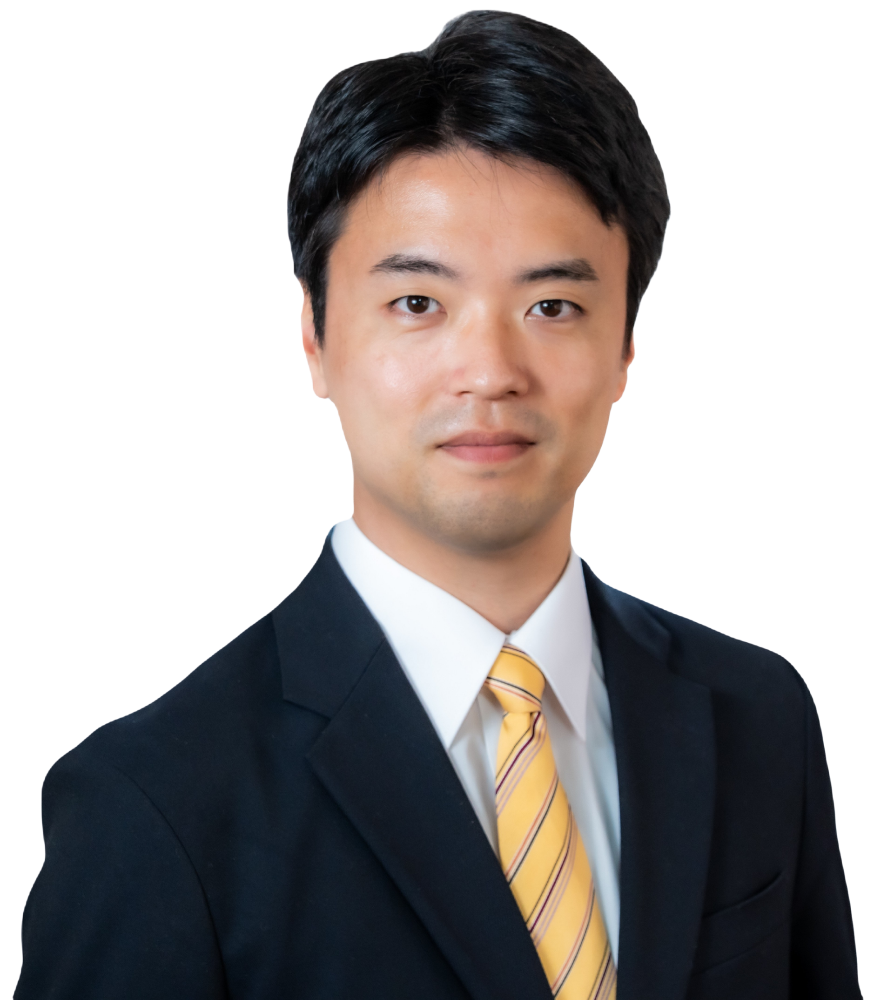

1990年7月31日生まれ。東京都江東区亀戸出身。台東区在住。立教大学理学部物理学科卒業。東京工業大学大学院理工学研究科原子核工学専攻修了。新卒から野村総合研究所にて、ITシステムエンジニアとして従事。その後、AIを駆使した競馬予想アプリを友人と開発し企業。現在、ITコンサルティング事業のシンケールス・コンサルティング合同会社にて大手企業の業務支援を行なっている。
無所属として、特定の団体や利害関係にとらわれず、台東区民のために働く政治を実践します。子育て世代の皆さまの声を、台東区議会に届けます。
「再生の道」の推薦を受け、台東区の新しい未来を切り拓くため全力で挑みます。